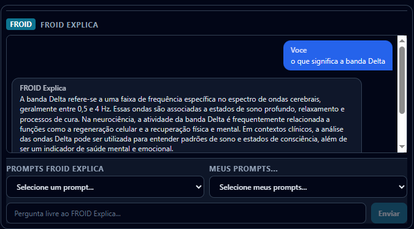

Conocimiento
La recuperación aumentada por búsqueda (RAG) selecciona fragmentos pertinentes para apoyar la respuesta sobre el producto y sus conceptos.
FROID Psique / Asistente
FROID Explica ayuda al profesional a explorar el significado operativo de las medidas disponibles y a consultar conocimiento. El contexto enviado desde la pantalla orienta la respuesta; la decisión clínica permanece con quien atiende.

La recuperación aumentada por búsqueda (RAG) selecciona fragmentos pertinentes para apoyar la respuesta sobre el producto y sus conceptos.
Las medidas y la transcripción disponibles en el contexto de la consulta permiten discutir el corte analizado. Una pregunta no amplía permisos ni carga automáticamente toda la cartera.
La consulta a Data-Froid depende de la base elegible y de las condiciones de privacidad. No da acceso a las historias clínicas de otras personas.
La búsqueda localiza material relacionado con la pregunta; el modelo redacta una respuesta con ese contexto. Como en una investigación bibliográfica, encontrar un fragmento no garantiza que la conclusión sea correcta.
Verifique la fuente y los registros originales. RAG no elimina los errores, y el tamaño del modelo no es una medida de precisión clínica. Los datos ausentes deben seguir declarándose como ausentes.
La biblioteca nativa ofrece puntos de partida. Las preguntas propias permiten explicitar el objetivo, la sesión y el intervalo. La cantidad y la disponibilidad de los prompts acompañan la versión de la aplicación.
En los prompts propios, prefiera un objetivo y un contexto claros. No incluya datos identificables de terceros fuera del contexto autorizado. Confirme en la aplicación dónde se guardan las preguntas y si hay sincronización entre dispositivos.
El asistente no debe concluir autenticidad, conflicto facial-vocal, diagnóstico ni superioridad de una terapia a partir de los índices. La interpretación facial sigue separada de la vocal.